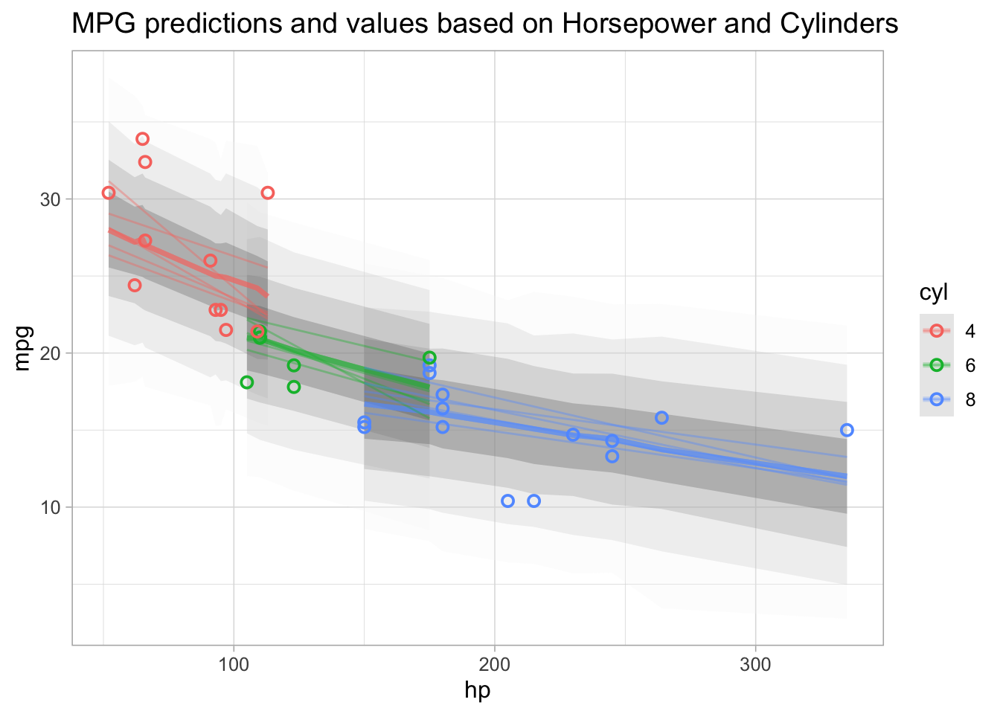

Sys.setenv(RETICULATE_PYTHON = "managed")In my previous post, I used the grammar of graphics to work with the posterior distributions on a PyMC model. Recently, I used the new version of reticulate that uses uv to manage the Python environment. From the post:
|> with py_require(), Reticulate will automatically create and manage Python environments behind the scenes so you don’t have to.
I’m a huge fan of uv, and how the developers of Reticulate integrated this really enhances what you can do bringing Python and R together.
Bayesian models (Python) + grammar of graphics (R) = ❤️
This is a nod to the title of Benjamin T. Vincent’s blog post, who inspired me to dive further into PyMC.
The reason I started looking into using the grammar of graphics with PyMC was to emulate an R enviornment and tidyverse as much as possible. What if instead we just use the R environement.
Again… but why?
Workflow
Set up the environment
Load up reticulate and the tidyverse. The first difference in this workflow is that mtcars is a dataset loaded into R by default.
library(reticulate)
library(tidyverse)── Attaching core tidyverse packages ──────────────────────── tidyverse 2.0.0 ──
✔ dplyr 1.1.4 ✔ readr 2.1.5
✔ forcats 1.0.0 ✔ stringr 1.5.1
✔ ggplot2 3.5.2 ✔ tibble 3.2.1
✔ lubridate 1.9.4 ✔ tidyr 1.3.1
✔ purrr 1.0.4
── Conflicts ────────────────────────────────────────── tidyverse_conflicts() ──
✖ dplyr::filter() masks stats::filter()
✖ dplyr::lag() masks stats::lag()
ℹ Use the conflicted package (<http://conflicted.r-lib.org/>) to force all conflicts to become errorsmtcars |>
head()| mpg | cyl | disp | hp | drat | wt | qsec | vs | am | gear | carb | |
|---|---|---|---|---|---|---|---|---|---|---|---|
| Mazda RX4 | 21.0 | 6 | 160 | 110 | 3.90 | 2.620 | 16.46 | 0 | 1 | 4 | 4 |
| Mazda RX4 Wag | 21.0 | 6 | 160 | 110 | 3.90 | 2.875 | 17.02 | 0 | 1 | 4 | 4 |
| Datsun 710 | 22.8 | 4 | 108 | 93 | 3.85 | 2.320 | 18.61 | 1 | 1 | 4 | 1 |
| Hornet 4 Drive | 21.4 | 6 | 258 | 110 | 3.08 | 3.215 | 19.44 | 1 | 0 | 3 | 1 |
| Hornet Sportabout | 18.7 | 8 | 360 | 175 | 3.15 | 3.440 | 17.02 | 0 | 0 | 3 | 2 |
| Valiant | 18.1 | 6 | 225 | 105 | 2.76 | 3.460 | 20.22 | 1 | 0 | 3 | 1 |
I’ve listend to enough presentations and interviews from Charlie Marsh to know I can’t do it justice to explain how uv works. An oversimplification of uv is that it centralizes package downloads, and then distributes them when needed for new isolated enviornments after resolving the dependencies. The main difference is that there isn’t reinstallation needed across environements.
I’ve used PyMC with other uv environements, so running this was pretty straightforward.
py_require('pymc', python_version="3.11")
py_config()python: /Users/ryan/Library/Caches/org.R-project.R/R/reticulate/uv/cache/archive-v0/gKtLQ4Ys-srj2T0OKKL-t/bin/python3
libpython: /Users/ryan/Library/Caches/org.R-project.R/R/reticulate/uv/python/cpython-3.11.12-macos-aarch64-none/lib/libpython3.11.dylib
pythonhome: /Users/ryan/Library/Caches/org.R-project.R/R/reticulate/uv/cache/archive-v0/gKtLQ4Ys-srj2T0OKKL-t:/Users/ryan/Library/Caches/org.R-project.R/R/reticulate/uv/cache/archive-v0/gKtLQ4Ys-srj2T0OKKL-t
virtualenv: /Users/ryan/Library/Caches/org.R-project.R/R/reticulate/uv/cache/archive-v0/gKtLQ4Ys-srj2T0OKKL-t/bin/activate_this.py
version: 3.11.12 (main, May 30 2025, 05:53:55) [Clang 20.1.4 ]
numpy: /Users/ryan/Library/Caches/org.R-project.R/R/reticulate/uv/cache/archive-v0/gKtLQ4Ys-srj2T0OKKL-t/lib/python3.11/site-packages/numpy
numpy_version: 2.2.6
NOTE: Python version was forced by py_require()You can see that we have an ephemeral cached version of a python environment created with uv and reticulate.
Set up the data
A significant use case for me to use R in the workflow, especially for early stages of iterating on the model building process, would be to use the tidyverse for data wrangling. Right off the bat we can use dplyr::mutate() to scale the variables. You can imagine other types of transformations that are more complex that this would be beneficial to do in an interective setting.
Because we will model an interaction similar to mpg ~ cyl * hp, I added a variable that lm() or brms would typically do under the hood. (Car analogy only because we are using mtcars… otherwise I don’t know anything about cars)
mtcars_scaled <- mtcars %>%
mutate(
hp_c = scale(hp)[, 1],
cyl_c = scale(cyl)[, 1],
hp_cyl = hp_c * cyl_c
)
pandas_mtcars <- r_to_py(mtcars_scaled)
print(class(mtcars_scaled))[1] "data.frame"print(class(pandas_mtcars))[1] "pandas.core.frame.DataFrame" "pandas.core.generic.NDFrame"
[3] "pandas.core.base.PandasObject" "pandas.core.accessor.DirNamesMixin"
[5] "pandas.core.indexing.IndexingMixin" "pandas.core.arraylike.OpsMixin"
[7] "python.builtin.object" PyMC Model
The python sytax would look very similar to this, only now instead of using objects with dot notation, we access methods and attributes with the $ character. If you are purely a python developer, this might look obscene. I choose to put up with this quirkyness because I find working with dataframes in R and plotting more than worth it.
pm <- import('pymc', convert = FALSE)
mod <- pm$Model(
coords = list(
car = pandas_mtcars$index,
predictors = c('hp', 'cyl', 'hp_cyl')
)
)
with(mod, {
X <- pm$Data('X', pandas_mtcars$loc[, c('hp', 'cyl', 'hp_cyl')])
alpha = pm$StudentT("alpha", nu = 3, mu = 19.2, sigma = 5.4)
sigma = pm$HalfStudentT("sigma", nu = 3, sigma = 5.54)
beta = pm$Normal("b", mu = 0, sigma = 1, dims = 'predictors')
mu = pm$Deterministic("mu", alpha + pm$math$dot(X, beta), dims = 'car')
y = pm$Normal(
"y",
mu = mu,
sigma = sigma,
shape = X$shape[0], # python index
observed = pandas_mtcars$mpg,
dims = "car",
)
# using a single core and chain because of Quarto, normally this would be 4 chains
idata = pm$sample(random_seed = 527L, cores = 1L, chains=1L)
})
Step Grad Sampli…
Progre… Draws Diverg… size evals Speed Elapsed Remaini…
──────────────────────────────────────────────────────────────────────────────
━━━━━━━ 2000 0 0.19 15 1392.39 0:00:01 0:00:00
draws/s
with(mod, {
pp = pm$sample_posterior_predictive(idata, predictions = TRUE)
})Sampling ... ━━━━━━━━━━━━━━━━━━━━━━━━━━━━━━━━━━━━━━━━ 100% 0:00:00 / 0:00:00Posterior
Now that we have the model’s az.InferenceData object and posterior predictions, we can work on replicating some of the plots. Only this time we can use tidybayes directly!
df_posterior <- idata$posterior$mu$to_dataframe()$reset_index() |>
py_to_r() |>
as_tibble() |>
left_join(rownames_to_column(mtcars, 'car')) |>
mutate(group = paste0(chain, draw, cyl))Joining with `by = join_by(car)`df_predictions <- pp$predictions$to_dataframe()$reset_index() |>
py_to_r() |>
as_tibble() |>
left_join(rownames_to_column(mtcars, "car"))Joining with `by = join_by(car)`Plot
df_predictions |>
ggplot(aes(hp, y, color = as.factor(cyl))) +
tidybayes::stat_lineribbon(.width = c(.99, .95, .8, .5), alpha = 0.25) +
geom_line(
aes(y = mu, group = group),
data = df_posterior |> filter(draw %in% round(seq(5, 900, length.out = 5))),
alpha = 0.38
) +
geom_point(aes(y = mpg), data = mtcars, shape = 21, size = 2, stroke = 1) +
#scale_fill_manual(values=c('#F8766D', '#00BA38', '#619CFF', 'white')) +
scale_fill_brewer(palette = "Greys") +
theme_light(base_size = 12) +
guides(fill = 'none') +
labs(
title = 'MPG predictions and values based on Horsepower and Cylinders',
x = 'hp',
y = 'mpg',
color = 'cyl'
)